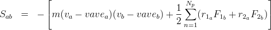

fix ave/euler command¶
Syntax¶
fix ID group-ID ave/euler nevery N cell_size_relative c parallel par keywords values
- ID, group-ID are documented in fix command
- ave/euler = style name of this fix command
- nevery = obligatory keyword
- n = calculate average values every this many timesteps
- cell_size_relative = obligatory keyword
- c = cell size in multiples of max cutoff
- parallel = obligatory keyword
- par = “yes” or “no
- zero or more keyword/value pairs may be appended
- keyword = basevolume_region
basevolume_region values = reg-ID region-ID = correct grid cell volume based on this region
Examples¶
fix 1 all ave/euler nevery 100 cell_size_relative 4.5
Description¶
Calculate cell-based averages of velocity, radius, volume fraction, and pressure (-1/3 * trace of the stress tensor) every few timesteps, as specified by the nevery keyword. The size of the cells is calculated as multiple of the maximum cutoff, via the cell_size_relative. Note that at least a relative cell size of 3 is required.
Note that velocity is favre (mass) averaged, whereas radius is arithmetically averaged. To calculate the stress, this command internally uses a compute stress/atom . It includes the convective term correctly for granular particles with non-zero average velocity (which is not included in compute stress/atom). However, it does not include bond, angle, diahedral or kspace contributions so that the stress tensor finally reads
where vave is the (cell-based) average velocity. The first term is a kinetic energy contribution for atom I. The second term is a pairwise energy contribution where n loops over the Np neighbors of atom I, r1 and r2 are the positions of the 2 atoms in the pairwise interaction, and F1 and F2 are the forces on the 2 atoms resulting from the pairwise interaction.
The parallel option determines if every process allocates its own local grid for postprocessing (for parallel = yes), or each proc contributes to one single global grid (for parallel = no). This will be slower since it requires parallel communication, but will ensure that the grid cells do not move over time (e.g. in case of a moving boundary)
The basevolume_region option allows to specify a region that represents the volume which can theoretically be filled with particles. This will then be used to correct the basis of the averaging volume for each cell in the grid. For example, if you use a cylindrical wall, it makes sense to use an identical cylindrical region for the basevolume_region option, and the command will correctly calculate the volume fraction in the near-wall cells. the calculation of overlap between grid cells and the region is done using a Monte-Carlo approach.
Restart, fix_modify, output, run start/stop, minimize info¶
No information about this fix is written to binary restart files. None of the fix_modify options are relevant to this fix.
This fix computes the above-mentioned quantities for output via a dump euler/vtk command. The values can only be accessed on timesteps that are multiples of nevery since that is when calculations are performed.
No parameter of this fix can be used with the start/stop keywords of
the run command. This fix is not invoked during energy minimization.
Restrictions¶
Volume fractions and stresses are calculated based on the assumption of a structured (equidistant regular) grid, so volume fractions and stresses near walls that are not alligned with the grid will be incorrect.
Coarse-graining information:
Using coarsegraining in
combination with this command might lead to
different dynamics or system state and thus to
inconsistancies. However, the influence of this
model on the global dynamics or system state might
be small so in some cases the results may be valid.
This has to be reviewed by a specialist on a
case-by-case basis.
Note
Coarsegraining may or
may not be available in LIGGGHTS(R)-PUBLIC.